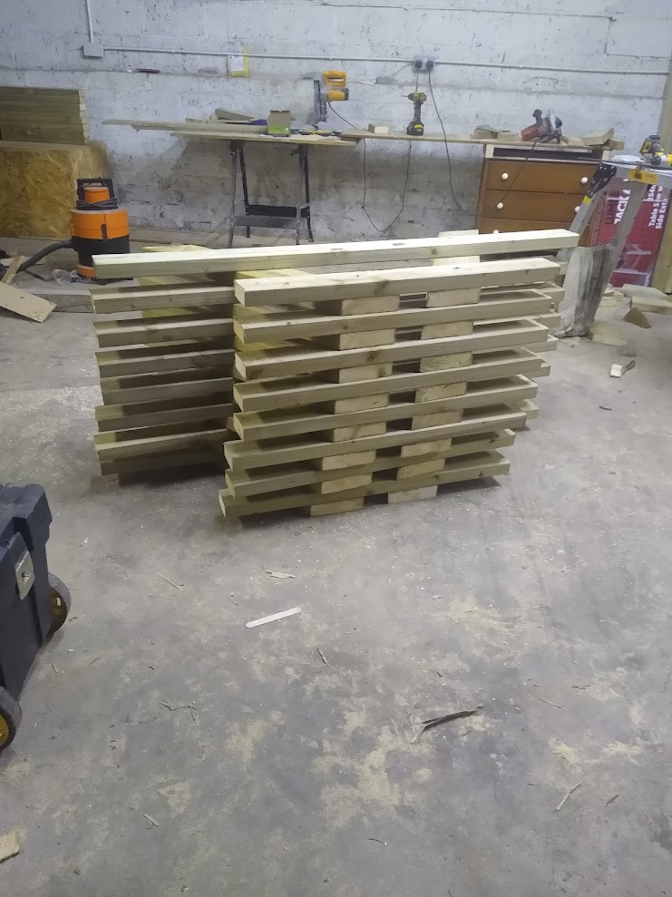
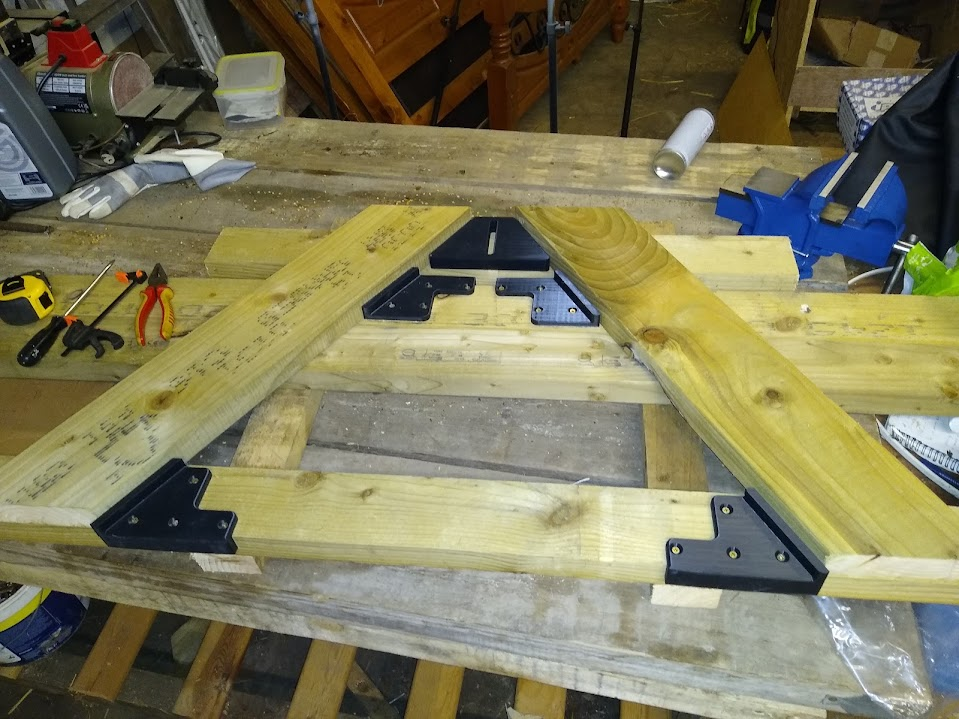
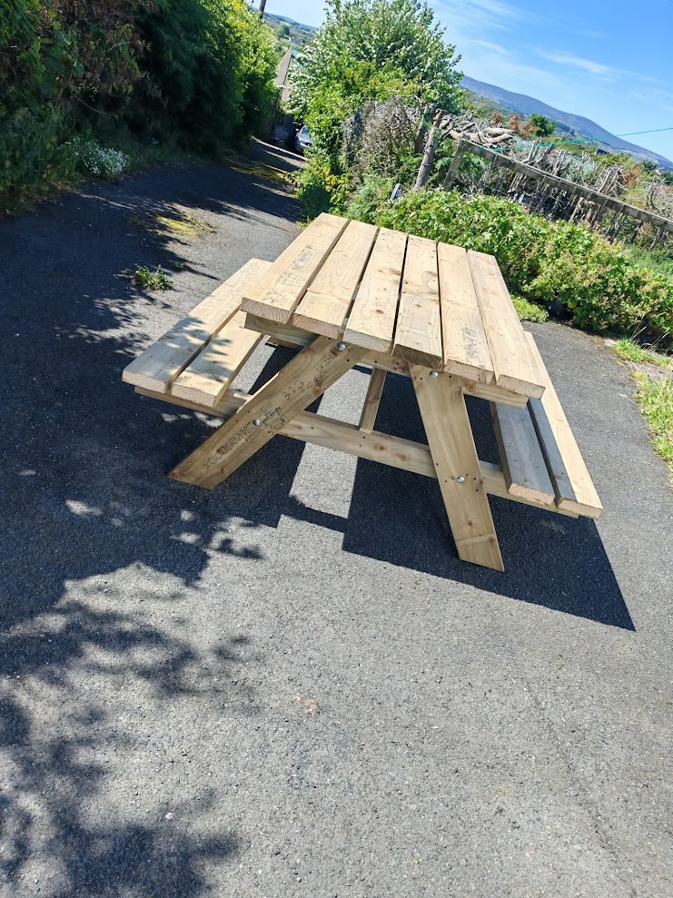
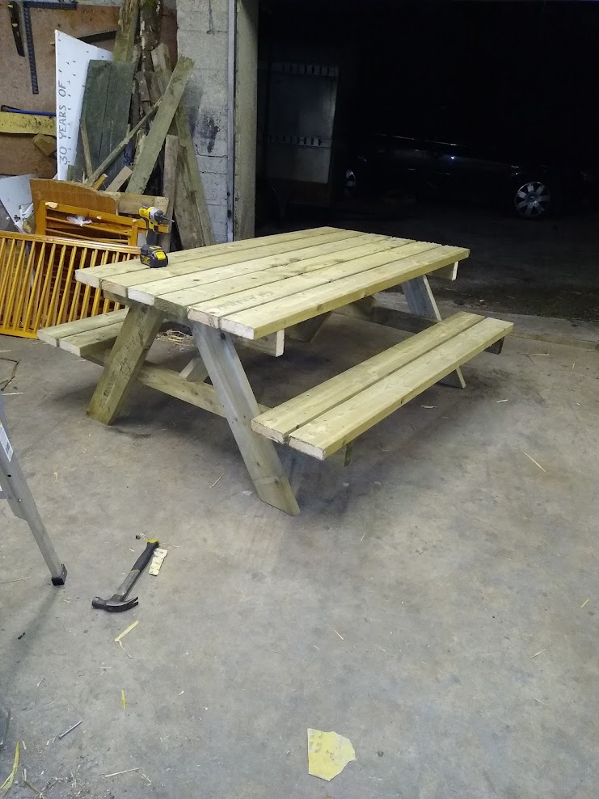

This project shows how I have went about creating batches of picnic tables. The tables are 6ft long, and are primarily constructed for 6x2 pressure treated timber although there is some 4x2 material used too.
| Part | Quantity | Size | Material |
|---|---|---|---|
| Tabletop Slats | 5 | 1800 mm | 6x2 |
| Seat Slats | 4 | 1800 mm | 6x2 |
| Legs (A-frame) | 4 | 750 mm (angled) | 4x2 |
| Cross Members | 2 | 1450 mm | 4x2 |
| Angled Braces | 4 | 600 mm (cut at 45°) | 4x2 |




Continue to refine the manufacturing process to reduce time while ensuring strength and repeatability.
If you want advice or help with building your own picnic table, feel free to contact me.